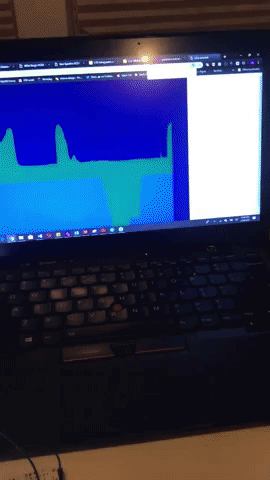

Image of My Circuit

This is a close up image of how I organized my bread board.

My amazing creation. See below for documentation for assignment 7!
This is a close up image of how I organized my bread board.
void setup() {
Serial.begin(9600); // initialize serial communications
Serial.setTimeout(10); // set the timeout for parseInt
pinMode(5, OUTPUT);
}
void loop() {
if (Serial.available() > 0) { // if there's serial data
int inByte = Serial.read(); // read it
Serial.write(inByte); // send it back out as raw binary data
analogWrite(5, inByte); // use it to set the LED brightness
}
int s1 = analogRead(0);
int s2 = analogRead(2);
Serial.print("[");
Serial.print(s1);
Serial.print(",");
Serial.print(s2);
Serial.println("]");
}
var serial; // variable to hold an instance of the serialport library
var portName = 'COM4' //rename to the name of your port
var inData;
function setup() {
serial = new p5.SerialPort(); // make a new instance of the serialport library
serial.on('list', printList); // set a callback function for the serialport list event
serial.on('connected', serverConnected); // callback for connecting to the server
serial.on('open', portOpen); // callback for the port opening
serial.on('data', serialEvent); // callback for when new data arrives
serial.on('error', serialError); // callback for errors
serial.on('close', portClose); // callback for the port closing
serial.list(); // list the serial ports
serial.open(portName); // open a serial port
createCanvas(1200, 800);
}
// get the list of ports:
function printList(portList) {
// portList is an array of serial port names
for (var i = 0; i < portList.length; i++) {
// Display the list the console:
print(i + " " + portList[i]);
}
}
function serverConnected() {
print('connected to server.');
}
function portOpen() {
print('the serial port opened.')
}
function serialError(err) {
print('Something went wrong with the serial port. ' + err);
}
function portClose() {
print('The serial port closed.');
}
function serialEvent1() {
if (serial.available()) {
inData = serial.read();
console.log("got back " + inData);
}
}
function keyPressed() {
//console.log("writing key");
serial.write(key);
}
function draw() {
background(0);
fill(255);
text("inData: " + inData, 30, 30);
}
function serialEvent() {
if (serial.available()) {
var datastring = serial.readLine(); // readin some serial
var newarray;
try {
newarray = JSON.parse(datastring); // can we parse the serial
} catch (err) {
//console.log(err);
}
if (typeof (newarray) == 'object') {
dataarray = newarray;
}
console.log("got back " + datastring);
}
}
function graphData(newData) {
// map the range of the input to the window height:
var yPos = map(newData, 0, 1023, 0, height);
// draw the line
line(xPos, height, xPos, height - yPos);
// at the edge of the screen, go back to the beginning:
if (xPos >= width) {
xPos = 0;
// clear the screen by resetting the background:
background(0x08, 0x16, 0x40);
} else {
// pass
}
}
function draw() {
stroke('rgba(0,255,0,0.25)'); // green
graphData(dataarray[0]);
stroke('rgba(0,80,255,0.5)'); // blue
graphData(dataarray[1]);
xPos++;
}